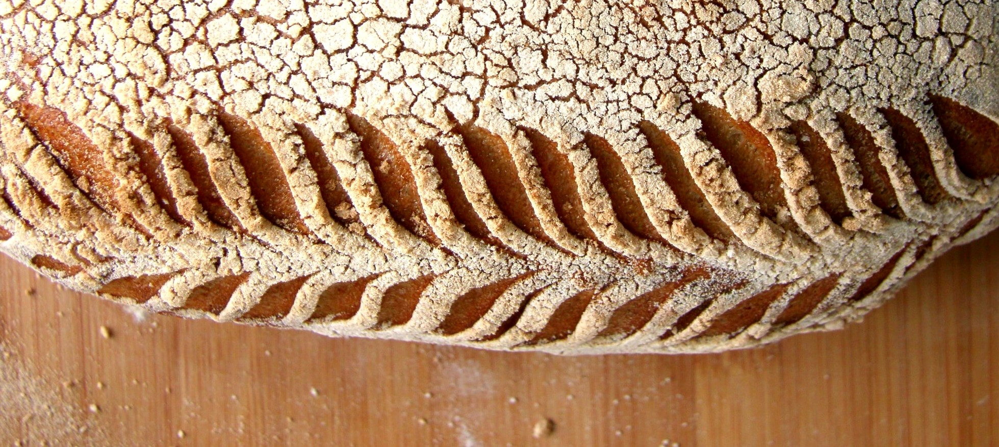

מתכון ללחם
לחם שמרים

רכיבים
- 1 קילו תערובת כוסמין לבן-מלא-70%
- 100 גרם קמח שיפון
- 650 גרם מים
- 25 גרם שמרים
- 30 גרם שמן זית
- 10 גרם מלח
שלבי ההכנה
- ממיסים את השמרים עם שליש מכמות המים – מוסיפים כף סוכר או כחצי כוס קמח – מערבבים ושמים במקום חמים כ-10 דקות
- מוסיפים את כל המים שנשארו ומערבבים עם כף, מוסיפים בהדרגה חצי מכמות הקמח עד שנוצרת עיסה אחידה
- מוסיפים את השמן, מערבבים עם כף ואז את כל הקמח שנשאר ואת המלח
- מקפלים ולשים עד שנוצר בצק. אני יוצר כמה כדורים מקומחים – להם אני נותן לעמוד במקום חמים 10 דקות ולאחר מכן לש מעט – זה חוסך את הלישה הארוכה.
- מקמחים את הבצק ויוצרים כדור, מכניסים לקערה ונותנים לו לתפוח במקום חמים תחת מגבת לחה כ-45-50 דקות – עד להכפלת הנפח.
- מקמחים משטח עבודה ומחלקים את הבצק לשלושה חלקים שווים – לשים מעט ויוצרים כדורים (מומלץ לשקול, כל לחם אמור לשקול כ-600 גרם בערך).
- מכל כדור יוצרים גליל ע״י קיפול הבצק בחלק התחתון כמו מעטפה. חורצים עם סכין גילוח כמה פסים עמוקים בבצק, בתוך הפסים מפזרים מעט קמח תירס – למניעת הידבקות. מניחים בתבניות המשומנות והמקומחות.
- מדליקים תנור ל-180 מעלות ומכסים את התבניות עם מגבת לחה. מתפיחים את הבצק עד להכפלת הנפח – כחצי שעה עד 40 דקות
- מכניסים לתנור ואופים כ-40 דקות, הופכים באמצע האפיה את התבניות.
- כשהלחם יוצא מהתנור מוציאים אותו מיד מהתבניות ומניחים לו להצטנן על רשת או על צידי התבניות.
- פורסים כשהלחם מתקרר.